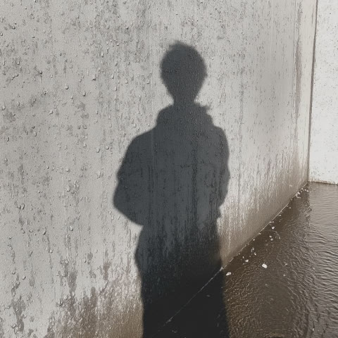

Event post · join flow
イベント投稿 — 参加表明からグループ参加まで
フルスクリーンのコンテンツにイベント属性が付くと、写真の上にイベント概要と参加ボタンが乗る。参加 → 詳細シート → 参加確定 → 専用グループへ。


SunnyVi
2h · 渋谷
1.2k
84
312
屋上サンセットピクニック
08/02 17:30 ~ 20:00
·
 渋谷スカイ 屋上展望空間
渋谷スカイ 屋上展望空間


 ＋{{ othersCount }}人が参加中
＋{{ othersCount }}人が参加中
屋上サンセットピクニック
08/02 17:30 ~ 20:00 · 渋谷スカイ

渋谷コミュニティ
渋谷駅周辺のコミュニティ
屋上サンセットピクニック
渋谷の夕景を見ながら、軽food とドリンクを持ち寄ってゆるく集まります。カメラ好きの方も大歓迎。雨天の場合は翌週に順延します。
AUG
2
8月2日(土) 17:30 – 20:00
開始1時間前に通知が届きます
渋谷スカイ 屋上展望空間
東京都渋谷区渋谷2-24-12 · サークル中心から 320m
参加者 {{ attendeeCount }}人
主催 SunnyVi
SunnyVi
Kawaii
Dreamy
o_cean
+8
others
参加するとイベント専用グループに追加されます
参加を表明しました
「屋上サンセットピクニック」の専用グループに追加されました。当日の集合場所はグループで共有されます。
屋上サンセットピクニック
{{ groupCount }} members · 8/2 17:30
今日
あなたがイベントに参加しました
ようこそ！当日は17:15に14Fのチケットカウンター前に集合します。
14:22
飲みものは各自持参でお願いします。こちらでも少し用意します。
14:22
はじめまして！カメラ持っていきます。
14:26参加します！よろしくお願いします。
14:31
屋上サンセットピクニック
{{ groupCount }} members · event group
AUG
2
詳細
17:30 – 20:00 · 渋谷スカイ
14F チケットカウンター前に 17:15 集合
9:41
{{ stepLabel }}